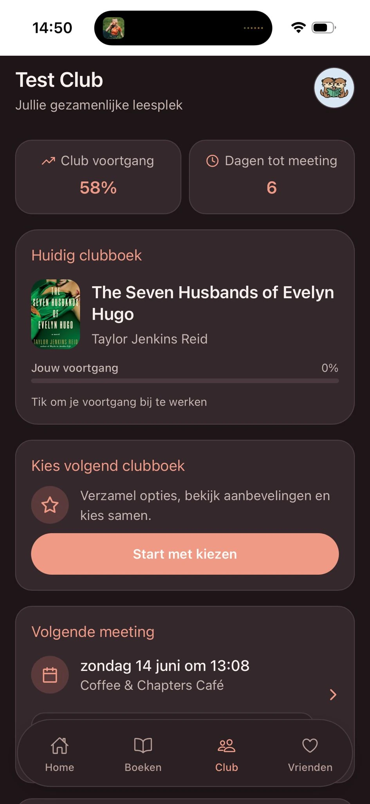
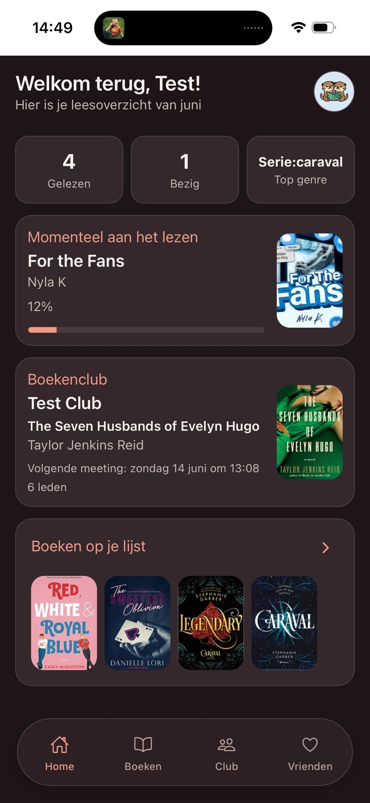
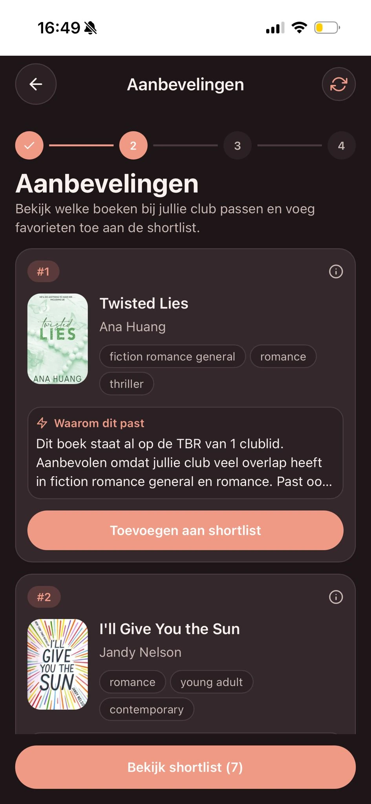
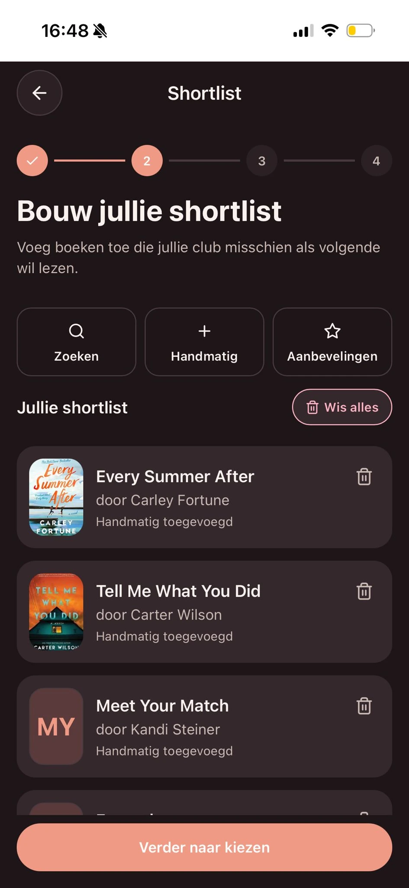
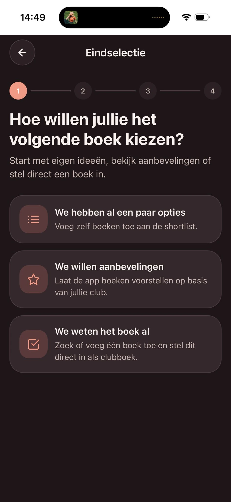
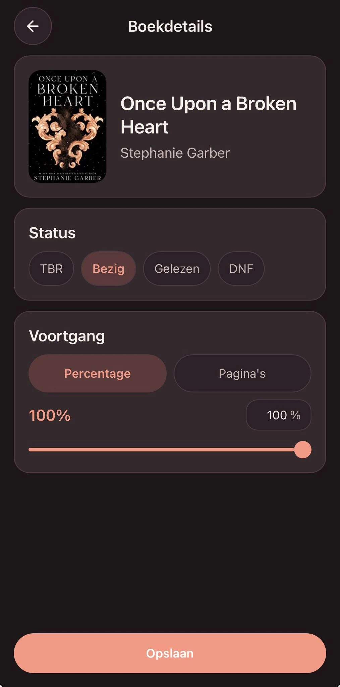
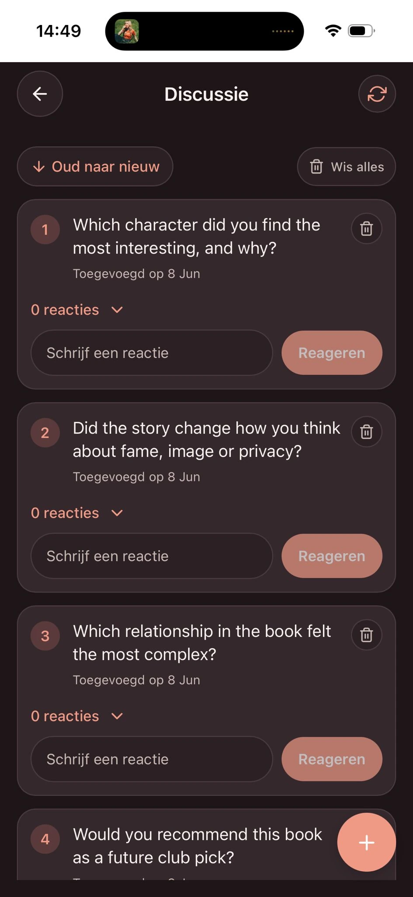
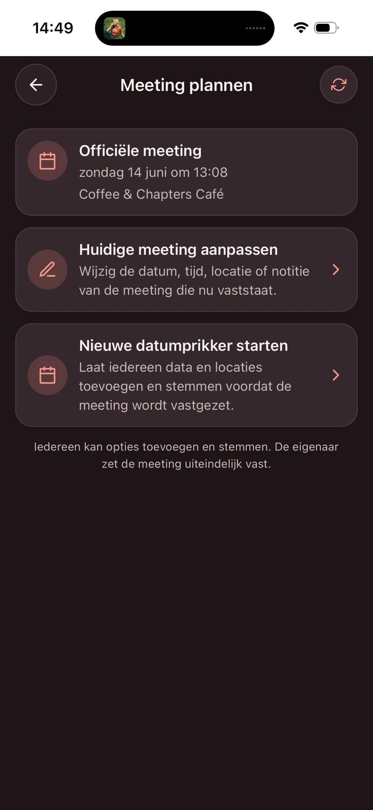
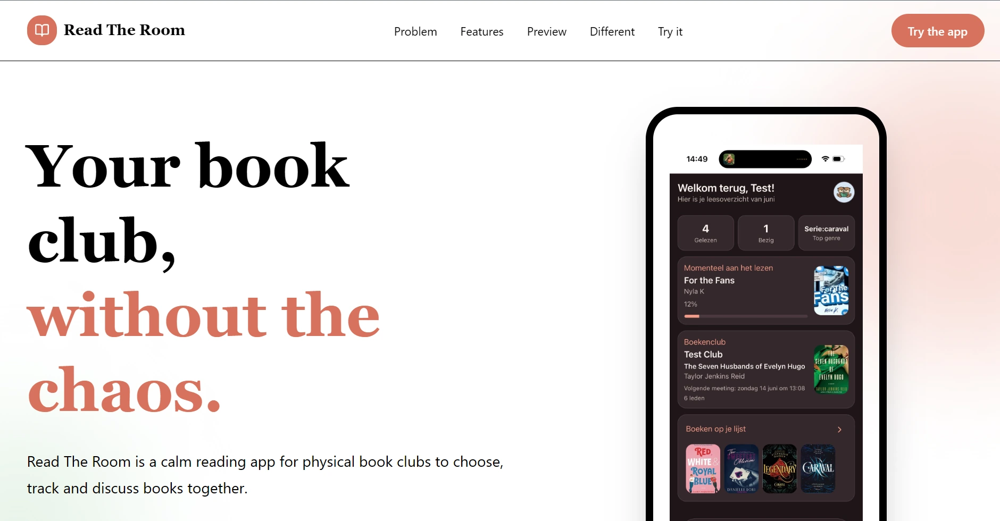

Choose the next read
Explore suggestions based on the club, build a shortlist and decide together. Each recommendation includes a reason for the match.
01 Book club app / 6-month school project
A book club is about more than the next book. It is about choosing, reading and talking together. I developed Read The Room during a six-month school project to bring those moments into one shared space.
Made for reading together
One club.
One shared space.
Book choices, reading progress
and conversations that connect.



Play Product video
I made this short product video to show the idea behind Read The Room: less time organising in group chats, more time enjoying a book together.
The film moves from the familiar chaos of choosing a book to the app in use: picking a title, tracking reading, discussing and planning a meeting.
Press play to watch. Sound is controlled in the player.
The idea
Picking a book is only the beginning. A club also needs to know how far everyone has read, when to meet and what to discuss. Read The Room brings those activities together rather than leaving them scattered across conversations.
The goal is a focused app that supports a physical book club, while still giving each member room for their own reading list and progress.
How can an app help a group read together, without making the organising feel like extra work?
My contribution
I developed Read The Room as a six-month school project. The work brings together personal book tracking and shared club activities in one app.
Alongside the app, I created the product video on this page. It presents the problem in a recognisable way and shows how the product responds to it.
Technology
What it does
Explore suggestions based on the club, build a shortlist and decide together. Each recommendation includes a reason for the match.
Keep a personal reading overview and see the club's current book and shared progress. Update books by page count or percentage.
Keep the confirmed meeting in view, or start a date poll so members can suggest and vote on options.
Use discussion questions and replies to collect thoughts about the book and prepare for the next get-together.
Inside The app
Eight screens from the app.
Open any screen for a closer look. Swipe sideways to browse.
Current reading, monthly totals and the next club meeting, together on the home screen.
A shared view of the current book, club progress and the next meeting.
Book suggestions explain why they fit the group before members add them to the shortlist.

Collect possible reads through search, manual additions or recommendations.

Bring existing ideas, ask for suggestions or set a book the club has already chosen.

Update a book's status and log progress as a percentage or a page count.

Keep discussion questions and replies together, ready for the next meeting.

See the confirmed meeting or collect and vote on date and location options.
Original screenshots are shown in Dutch. Descriptions are in English.

Explore The outcome
The result is a focused app for shared reading, accompanied by a product video and a one-page project website. Explore the concept or open the app demo to see it for yourself.
Have something in mind?
Let's talk{kind=link}
{kind=link}
{kind=link}
{kind=link}
{kind=link}
{kind=link}
{kind=link}
{kind=link}